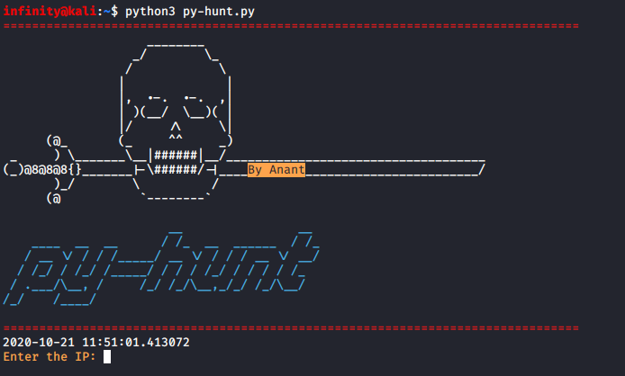
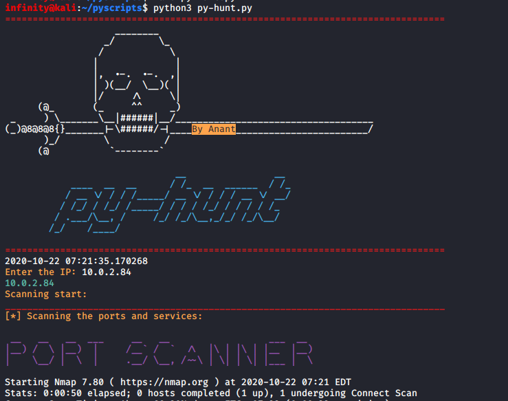
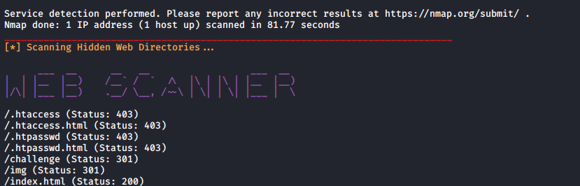

Py-hunt
> pip install colored
> git clone https://github.com/danielmiessler/SecLists.git
After that clone my repo from github website by git clone command.> git clone https://github.com/Anant1711/py-hunt.git
and run this script as python3.> python3 py-hunt.py

After that script will ask IP address for port/directories scanning, give the IP, and hit enter

Script will start doing its work, First, it will scan all the ports and services and then hidden web directories and in last it will give you the whois information.
